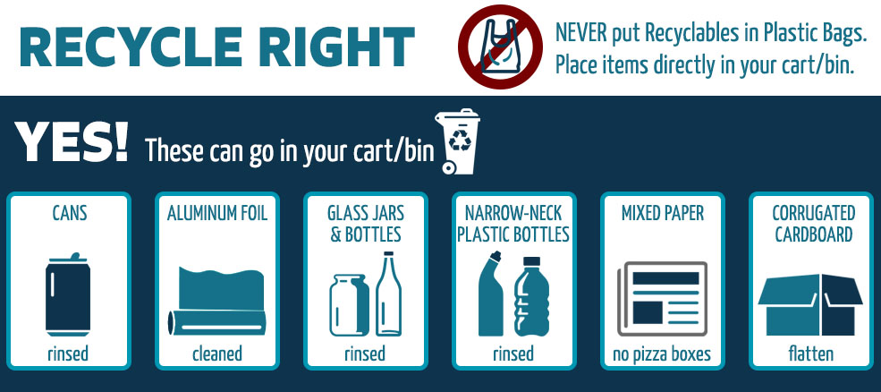

Acceptable
glass bottles and jars
plastic bottles, containers, tubs, and lids
mixed paper and cardboard
bulky rigid plastics
cans
countertop appliances
aluminum foil
Not acceptable
tires
wood fencing
construction material
liquids
batteries
pizza boxes
Things to keep in mind
Recycle empty bottles, cans, paper, and carboard.
Keep food and liquids out of your recycling receptacle.
Make sure none of the recyclables are bagged, as plastic bags are not recyclable.
For more information, go to the Shady Grove Transfer Station
website,
the Waste Management
website,
and the Potomac Disposal Inc.
webiste.